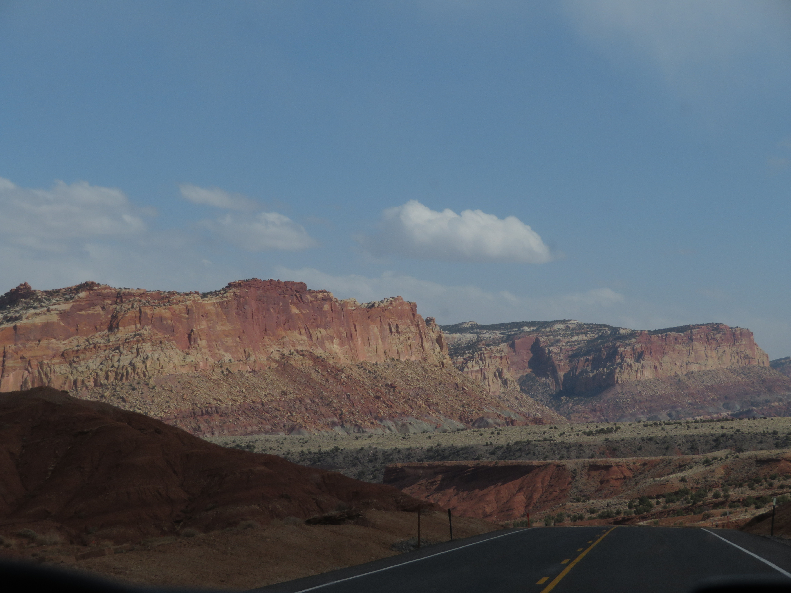
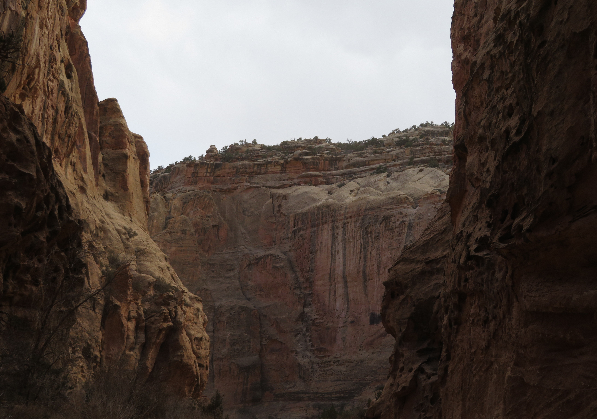
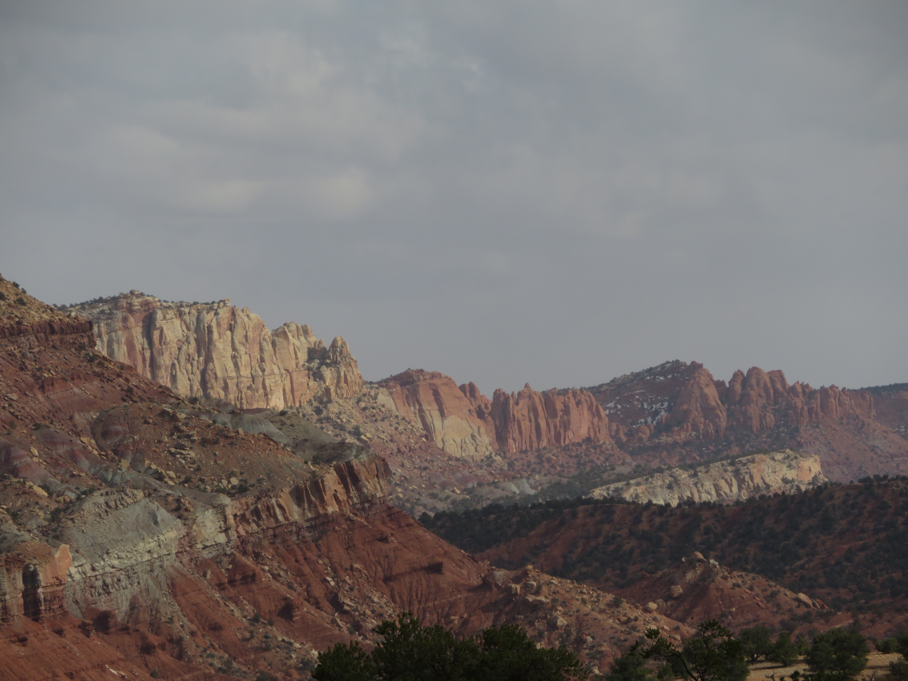
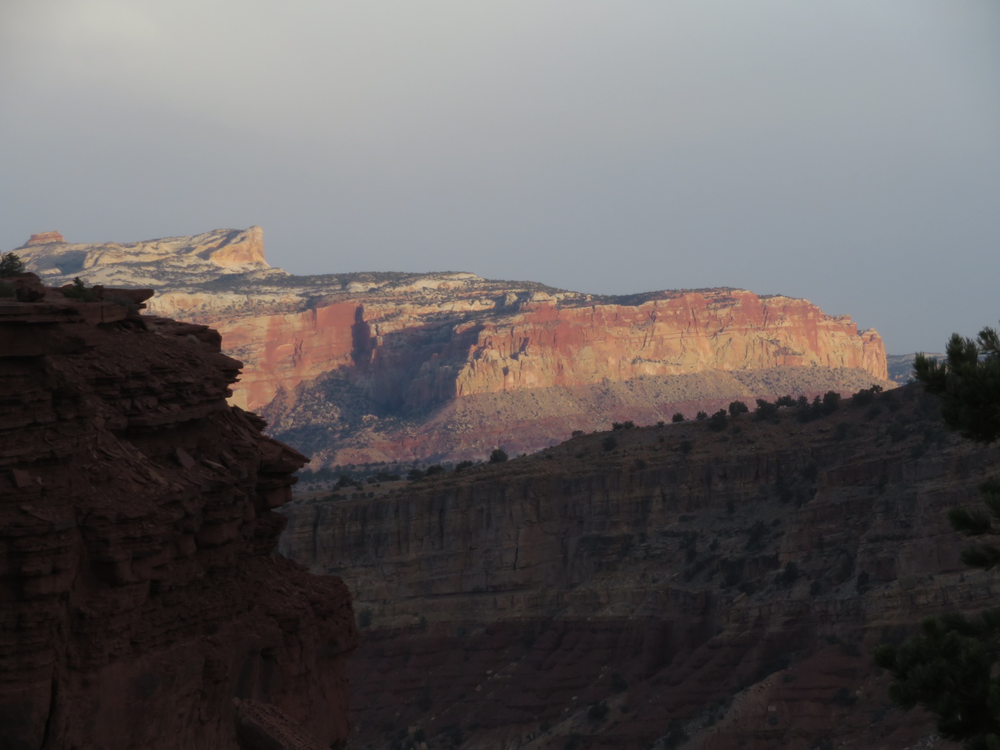
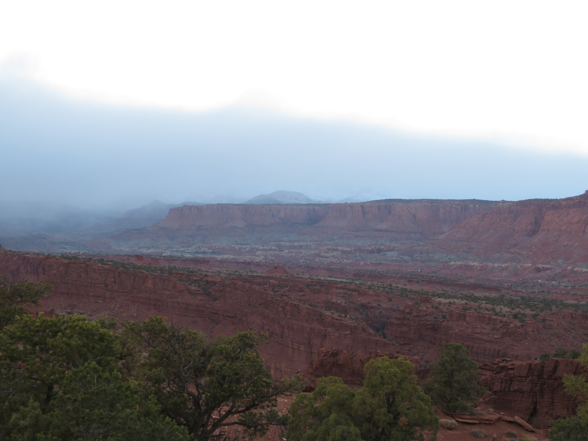

Scenic Drive

Waterpocket Fold
Centered around the Waterpocket Fold, Capitol Reef National Park is widely considered as one of the United States' most underrated national parks, containing unique desert scenery found nowhere else on earth.

Scenic Drive
Waterpocket Fold
The scenic drive in Capitol Reef is well worth it with the limited time I had in the park. The Capitol Gorge area is extremely impressive, as you are surrounded by narrow canyon walls on both sides. The park's scenery in general is otherworldly, and the desert landscape is sort-of slanted due to the Waterpocket Fold.

Capitol Gorge

Capitol Gorge

Waterpocket Fold
Capitol Reef also has plenty of gorgeous viewpoints just off the road, with the most famous being Panorama Point and the Goosenecks Overlook, both being best during sunset.

Panorama Point Overlook

Panorama Point Overlook

Goosenecks Overlook